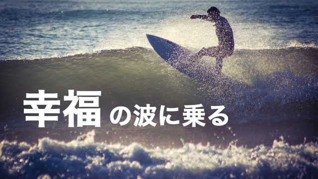

仕事や人間関係が順調に展開し人生全般がスムースに流れるとき。
あるいは困難と見えた目標や課題が次々とクリアされたり、幸運な出来事が身の回りに起こりだすようなとき。
つまり人生がうまくいくとき何が起こっているのでしょうか。
答えはシンプルで、それは「自分を受け入れている」すなわち自分と人生の展開を信頼しているときです。
逆に人生がうまく行かないときは、自分を受け入れず自分の人生がどう展開していくかのか不安や怖れを抱き、世界を不信の目で見ているときです。
いずれにせよ、自分を受け入れる度合いに応じて人生の状況も決まってくるということです。
なぜかというとこれまたシンプルな話で、自分を受け入れることは他者―周囲の状況、起こる出来事―をも受け入れることを意味し、それは全体との調和を図ることになるからです。
全体と調和すれば物事がスムースに流れるのは当たり前といえます。
そして自分を受け入れる→人生を信頼する→世界を信頼する（調和する）と、人生はますます好循環になります。
世界と自分は鏡の関係だからです。
すなわち世界を信頼すれば、信頼できる出来事が返ってくる。
世界に不信感を与えれば、不信を感じるを得ないことばかりが返ってくるということです。
世界を信じれば人生は好転する
ところで私たちは日頃、自分は巨大な世界の中に生きる非力な存在にすぎないと思い込んでいます。
社会の中のちっぽけな存在だと。
自分は取るに足りない存在だと思っている。
それが多くの人にとってなかなか「自分を受け入れられない」ことの理由です。
私たちは幼い頃から次のように言われて育ってきました。
「もっとガンバらなきゃダメだ」
「国語だけじゃなく他の教科も良い点とりなさい」
「ダラシない。もっと計画的に過ごしなさい」
「ちゃんとしなさい」
こうして私たちは「いまの自分」「ありのままの自分」を否定されてきました。
さらに
「世の中は厳しい」
「このままでは将来困るぞ」
と先を見据えて行動することの大切さを教えこまれてきました。
その結果、自分は無力であるという思いと厳しい世間に対する怖れの感情に支配されてしまったのです。
無力感と怖れは自分を守らなければならないという思いを強め、常に将来に備えて防御する姿勢をとります。
知識を身につける。学歴を身につける。資格を取る。お金を貯める。すべて将来への備えであり、非力な自分を守るための防具です。
自分を向上させるために勉強する、スキルを身につける、お金を貯める。これらは悪いことではありません。好きにやれば良いと思います。
しかし次のことは押さえておかなければなりません。
いま自分が何をするにせよ、その行動の起点が「怖れ」ならどんなことも結局はうまくいかないということです。少なくとも自分の満足のいく結果は得られないでしょう。
さらに言うなら、自分を無力な存在と見なし怖れる気持ちのまま「将来に備え」ても、その将来の幸せは決してやって来ないでしょう。その人の人生は「備えること」で終わるでしょう。準備し続ける人生ということです。
それは何度も言うように世界と自分は鏡の関係だからです。
怖れから起こす行動は世界に対する不信の表明であり、世界を信じないなら世界は不安に満ちた人生を返してくるでしょう。
人生の流れを逆転させるコツ
では世界を信じればよいのかと言うならそうなります。しかし世界を信じるということがあまりに漠然としているなら、まず自分を信じることから始めればいい。ありのままの自分を信頼し、そういう自分を受け入れることから始めてみましょう。
自分の人生は自分で創造していることを知って、その作り手である自分、クリエイターである自分の力を信じるということです。
たとえば私たちは子どもの頃もっと自由で無限を感じていたはずです。遊びや空想を通じて自分の世界を創造していたのです。
その頃世界は神秘と奇跡に輝いたのではないでしょうか。それは私たち自身が輝いていたからです。
その頃を思い出してみてください。
それは心を開き常に「今」にいて「今の自分」を完全に受け入れていたからこそ輝いていたのです。
いつの頃からか私たちは自分を無力な存在と見なし、身を守る必要から未来に備える生き方を採用するようになりました。
こうして「将来に備える」ことで私たちは貴重な「いま」を取り逃がし続けているのです。
だから人生を好循環にしたいなら、この流れを逆転させれば良いのです。自分を受け入れ今この瞬間を大切にすることです。
自分は無力で防御すべきというのは、どこかで思い込まされた信念に過ぎません。後天的に身につけた信念は解除することができます。
新しい信念に差し替えれば良いのです。
つまり子どもの頃のように、ありのままの自分を発揮して良いのだという信念を呼び起こすということです。
そこに罪悪感を感じるならそれも思い込まされた信念だと見破りましょう。
怖れを手放し、ありのままの自分をトコトン信頼し完全に自分を受け入れる。まずこのことに努力してください。過去を悔み未来を心配するというムダなことにエネルギーを消費するのを止めて、今この時を大切にし目の前のことに全力を尽くすことです。
やってみれば分かります。
コツは決して先々のことを心配せず、今の自分への信頼の中にくつろぎながら目の前のことに集中すること。常に今にあることです。そうすれば外側の現象も変わっていきます。
人間関係が改善する。懸案だった問題が解決する。タイミングよく都合のよい出来事が起こる。
そして不思議なことに、気がつけば以前に願っていたことがいつの間にか実現していたりします。
でも本当は不思議でも何でもなく、全ては自分を受け入れ世界と和解することで全体（万物のエネルギーの流れ）と調和し、循環の流れに乗った結果です。
こうして私たちは幸福の波を乗り継いでいくことができるのです。